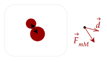

We said that work is the transfer of energy. In a collision, you may have noticed that it could be considered a sort-of transfer of speed. For example, when a fast moving particle hits a particle at rest, some of its speed could be transferred to it to make that particle move.
In this regard, it was decided that this movement could be considered a form of energy that could be transferred from one object to another. Previously, such an energy was called the "living" energy or in Latin "vis viva". Now, this form of energy is called the kinetic energy.
Let's see how to derive such; in a collision, we noted that they exert forces on each other. At that period, those forces do work as they transfer some of the kinetic energy from one object to the other.

We can't assume that the force and the displacement it does is in the same direction, and we don't know the angle between those two, so we'll use the dot product definition of work instead.
Now, this is great and all, but we are concerned here with how fast the objects are going, so force and displacement aren't really that useful. However, we can use the law of acceleration to get a little closer to what we want.
Then, we note acceleration is the change in velocity over time, and displacement under constant acceleration (note the constant force) is the average velocity times the change in time.
Now, we just have to do that ugly dot product on the right. Thankfully, since the dot product is commutative, it is as simple as
With this, we can see what energy is being transferred throughout a collision. Thus, we define the kinetic energy as the following.
One thing to notice is that the here is the speed of the object, not the velocity. It lost its direction once we computed the dot product, which as before returns a scalar. This means that overall, the kinetic energy is a scalar quantity.
Another thing to notice is the unit of kinetic energy, which is also the Joule.
Exercise 1
(HRK E11.28a) Calculate the kinetic energy of a 110-kg football linebacker running at 8.1 m/s.
Solution
We will just use our formula above.
Exercise 2
An object of mass moving at a speed has kinetic energy. How will the kinetic energy change in the following situations?
(a) The speed is doubled
(b) The speed is halved
(c) The mass is doubled
Solution
Looking at the formula, we see that kinetic energy varies proportionally to speed squared. Thus, if speed changes, the kinetic energy changes quadratically. Further, it is proportional to mass, so if it changes, kinetic energy changes linearly.
With this, if speed is doubled and halved, kinetic energy is quadrupled (4x) and cut into four (1/4x) respectively, and if mass is doubled, kinetic energy doubles as well (2x).
Problem 1
(HRK P11.17) A running man has half the kinetic energy that a boy of half his mass has. The man speeds up by 1.00 m/s and then has the same kinetic energy as the boy. What were the original speeds of man and boy?
Answer
Let's write out the kinetic energies of the man and the boy below. We let the man have mass .
We know here that right now, the man's kinetic energy is half that of the boy. Thus, we write the following out.
We leave this for later. Now, we do the other condition.
Substitute the above relation to get the following.
Solving this using the quadratic equation, we get that the initial speed of the man is about 2.414m/s. Substituting above, we get that the boy is running at 4.828m/s.
If we introduce momentum again, since we are talking about a collision after all, then we can write kinetic energy in terms of momentum. We first note the following.
Now, substituting that in for the speed, we have this.
Once again, the momenta here is the magnitude of momentum; momentum is a vector, kinetic energy is a scalar.
Question 1
(HRK Q11.19) A light object and a heavy object have equal kinetic energies of translation. Which one has the larger momentum?
Answer
We will solve for the momentum in terms of the kinetic energy.
Here, we see that mass is proportional to the momenta. Thus, the heavier object has more momenta.
Question 2
(HRK Q11.20) Can a body have kinetic energy without having momentum? Can a body have momentum without having kinetic energy?
Answer
Both answers are no. For the first, if there is no momentum, there is no velocity; thus, there is no speed, so no kinetic energy. For the second, if there is no speed, it means the object is at rest, no momentum.
Question 3
(HRK Q11.30) Does kinetic energy depend on the direction of the motion involved? Can it be negative? Does its value depend on the reference frame of the observer?
Answer
For the first two, no. Kinetic energy is a scalar, so it shouldn't matter in what direction the speed is. Further, since speed is strictly positive as the magnitude of velocity, and mass is certainly positive, it is always positive.
For the last question, yes. Since the reference frame of an observer can change what velocity an object appears to be moving at, it also changes the speed; for example, an object moving in one reference frame can appear to be stationary in another.
In the above, we showed how to derive the kinetic energy in a force during a collision. We can also derive it by seeing the net work done by the net force.
We substitute in the force using the Law of Acceleration. We will, as usual, assume that mass is constant throughout the motion.
Now, the integral is quite annoying, since we don't exactly know what it means to integrate acceleration with respect to position. Here is one way to fix that. To compute this, we will use
Note that we can write out acceleration as the rate of change of velocity over time, and by chain rule, it is equal to the rate of change of velocity with respect to position, times the rate of change of position over time. Then, note that the rate of change of position over time is precisely the velocity.
Substitute this in to the above integral.
This is now solvable, as the
Here, we stopped the analysis and noted that this is the kinetic energy. However, notice how the left term is the final kinetic energy, using the final speed, while the right term is the initial kinetic energy, using the initial speed. Thus, we can write it succinctly below.
The above is the work-energy theorem. It tells us that the net work on an object is the change in kinetic energy of the object. Looking back at our definition for work, it makes sense; work here is the transfer of kinetic energy.
Question 1
(HRK Q11.17) The work done by the net force on a particle is equal to the change in kinetic energy. Can it happen that the work done by one of the component forces alone will be greater than the change in kinetic energy? If so, give examples.
Answer
Yes, it is possible. For example, imagine two forces acting against one another on an object, with one force greater than the other, displacing an object. The stronger force does more work than the net work overall. However, the net work is the one that determines the overall change in kinetic energy. Thus, the stronger force does more work than the change in kinetic energy of the object.
We expand on this theorem in the next tutorial, showing its usages in simplifying problem that we once did in kinematics and dynamics.